리움미술관 건축인터뷰 - 장 누벨
Architect Interview Leeum with Jean Nouvel
첨단기술과 현대 예술이 만들어내는 감각적 이미지 - MUSEUM 2


첨단 테크놀로지로 구현되는 기술 미학과 현대 예술이 교차하는 접점에서 건축 디자인에 임해온 장 누벨은 건축을
"공간을 구성하는 기술일 뿐만 아니라 이미지를 생산하는 작업"이라고 규정합니다. 삼성미술관 Leeum의 MUSEUM 2는 그러한 장 누벨의 디자인 프로세스가
가장 잘 구현된 작품입니다.
움푹 패인 대지 속에서 육중하게 솟아난 장 누벨의 MUSEUM 2는 대지 위로 자라난 나무들과 함께 그 형상 자체가 계속 생성되고 있는 현대 미술을 상징하는 듯합니다.
지상으로 올라온 상층부는 유리로 된 외벽과 다양한 크기의 직육면체‘전시박스(cube)’를 주 요소로 삼고 있습니다 자유분방하게 배치되는 이 전시박스들은 건물 내부로는
관람객들에게 새로운 전시 공간을 체험하게 하며, 동시에 건물의 외부 형태를 역동적으로 만들어 줍니다.
MUSEUM 2는 삼성미술관 Leeum의 한국 근·현대미술가뿐 아니라
도널드 저드(Donald Judd), 데미안 허스트(Damien Hirst) 등 세계 정상의 현대 미술가들을 망라하는 상설 전시 공간으로 사용됩니다.
관람객들은 로비를 통해 진입하게 됩니다.
전시박스의 재료는 세계 최초로 시도되는 부식 스테인레스 스틸입니다. 녹이 슬지 않도록 처리된 스테인레스 스틸에 녹을 슬게 한다는 이 역설적 발상을 구현하기 위하여
수많은 견본 검토와 테스트를 거쳐야 했습니다. 사물을 역설적으로 바라봄으로써 새로운 의미를 생성해내는 현대미술처럼 MUSEUM 2는 기존의 생각을 뛰어넘는 재료와
공간을 통해 건물 자체를 도시의 대지 위에 들어선 하나의 거대한 미술품으로 승화시켜 냅니다.
| 건축가 | Jean Nouvel (장 누벨) | 대지면적 | 1,787㎡ |
| 연면적 | 5,167㎡ | 규모 | 지상 2층, 지하 3층 |
Architect Tour

건축재질 - 부식 스테인레스 철판과 투명한 유리의 극적인 대비
MUSEUM 2는 극도이 투명도를 추구한 저철분 유리와
부식 스테인레스 철판을 주재료로 사용했습니다.
유리면으로부터 돌출되어 자유분방하게 배치되어 있는 전시 박스들은
부식 스테인레스 철판으로 인해 둔중하면서도 예리한 감각을 느끼게 합니다.
Leeum 프로젝트의 건축 설계사는 스테인레스 철판이 녹슬 수 있는지를 밝히기 위해 미국의
부식 전문가 마크 퀀란과 함께 수많은 실험을 거쳐, 마침내 세계 최초로
'흑화 피막을 지닌 스테인레스 스틸', 일명 '블랙 파티나'를 개발했습니다.
이 블랙 파티나로 감싸인 전시 박스들은 내부에서는 불규칙한 기하학적 라인을 형성하는 동시에
작품의 전시 공간을 확보하는 역할을 하며, 외부에서 보았을 때는 금속 고유의 묵직한 질량감으로
인해 건물이 대지를 파고들며 내려앉다 다시 솟아오르는 듯한 인상을 강화시켜 줍니다.

개비온 월과 썬큰가든 - 건축 대지에서 나온 재료로
자연의
흔적과 표정
MUSEUM 2 디자인의 특징은 건물을 앉히기 위해 대지를 파들어 갈 때 자연적으로 발생한
지하 벽면의 형태를 그대로 살려 형상화했다는 점입니다.
즉 땅을 파헤칠 때 형성된 지하 테두리에서 건물을 한 발짝 뒤로 물러나게 함으로써, 건축물을
땅과 마주보며 서 있게 한 것입니다. 지하 벽면과 건물 사이의 공간은 정원
[썬큰 가든 (sunken garden) : 상부로 열려져 있어 지상과 동일하게 빛이 들어 오는, 지면보다
낮은 정원]으로 활용했고,
지하 벽면의 외장은 기초 공사를 하면서 나온 암반석을 잘게 쪼개어
철제 프레임에 담은 '개비온(gabion, 돌망태)'을 쌓아올려 만들었습니다.

전시공간 - 현대미술의 특성을 살린 '자유로이 유동하는 공간'
주 전시홀은 포스트 텐션(post-tension)구조 공법을 도입해 전시장 내에
기둥이 없는
열린 공간을 구현했습니다.
현대미술의 특성을 살린 전시를 위한 '자유로이 유동하는' 공간을 만든 것입니다.
또한 어두운 전시 박스는 천장의 틈새를 통해 빛이 새어나오게 함으로써 빛과 어둠이
함께 어우러진 공간을 연출해 냅니다. 그리고 지하 1층에서 볼 수 있는 지상 1층의 돌출된
발코니 공간 두 층과의 사이에 설치된 중간층 공간은 비디오상영과 매체 전시를 위해
사용됩니다.
이렇게 빛과 공간을 적절히 조절하여 전시 기획 의도에 따라 유연한 공간 연출을 할 수 있게 한
MUSEUM 2는 관람객에게 새로운 전시 공간을
체험하게 할 것입니다.
나는 건축 안에 예술을 넣고 도시 안에 건축을 넣는다.
이미지 건축으로 미래의 시를 쓰는 예술가, 장 누벨
프랑스 출신의 건축가 장 누벨은 건축계뿐만 아니라 문화 예술계 전반에
걸쳐
국제적으로 그 이름이 널리 알려진 인물입니다. 1945년 생으로,
파리 국립 고등 예술학교
에콜 데 보자르를 수석 입학할 정도로
일찍이 그 천재성을 드러냈습니다.
장 누벨은 1976년 프랑스의 건축 운동 ‘Mars 1976’을 주도하고, 1980년에는
파리의 건축 비엔날레 예술 부분의 기획을 맡는 등 전방위적 활동을 펼쳐 왔으며,
1983년 예술가와 문학가에게 주어지는 기사 작위를
수여받은 바 있습니다.
1987년 완공된 파리의 아랍 문화원은 아랍과 유럽 문화의 관계, 전통과 현대의 충돌을
축적으로 표현해 극찬을 받은 그의 대표작입니다.

완공을 기다리고 있습니다.
장 누벨은 여러 작품을 통해서 현대적이며 미래지향적인 도시적 감성을 표현해 왔습니다. 유리, 철 등의 차가운 재료를 즐겨 사용하여 예리하고 세련된 이미지를 창출하는 장 누벨의 건축은 하나의 거대한
예술품으로 비유되곤 합니다.
건축을 시적 차원으로 승화시켜야 한다고 주장하는 장 누벨은 예술가들처럼 직관적인 영감에 따라 설계에 임합니다. 첨단의 테크놀로지와 현대 예술의 미감이 교차하는 접점 위에서 발현되어 온 그의 건축은 급진적이고 도전적입니다.
장 누벨이 왜 직관에 따라 건축 디자인을 하며, 그의 건축이 왜 시적 이미지로 가득 차 있는지는 다음과 같은 말에서 확인할 수 있습니다.
좋은 건축은 우리에게 현대의 문제점을 일깨워주고,
현대가 진부한 시대로 전락하지 않도록 저항하게 하는 도구입니다.
건축은 인간을 훨씬 능가하는 수명을 가지고 있습니다.
그것은 우리 시대 감성과 감수성의 척도이자,
동시에 과거를 증언하는, 흔치 않은 인간 행위입니다.


장 누벨 (Jean Nouvel) - 인터뷰 전문
Q Leeum 프로젝트를 맡았을 때 소감은 어떠셨습니까? 그리고 프로젝트의 주된 컨셉트는 무엇입니까?
A
오래 전에 이 프로젝트에 착수했는데 당시 건축 부지에는 여러 다른 건물들도 있었습니다.
초기에 제 관심사는 지형과의 관계를 염두에 두고 건물을 해당 공간의 굴곡 가운데 일부로 자리 잡게 하는 것이었습니다.
백지 상태의 공간이 아니라 도시 속에서 오랜 흔적을 지닌 굴곡 말입니다.
그러던 것이 프로젝트가 구체화되자 건물이 공간에 편입되려면 그 육중한 땅으로부터솟아 나와야 한다는 생각에 도달했습니다.
미술관의 방문객들은 깊은 곳에서 건물이 빠져나온 듯한 느낌을 받게 될 것입니다.
나무들도 건물 입구 높이에 심는 것이 아니라 10에서 15m 정도 낮은 곳에 심습니다.
수평과 굴곡의 대비를 보여주는 건축이라 할 수 있지요. 그리고 굴곡진 땅에서 솟아난 형태로 땅을 닮은 다양한 볼륨을 보여주게 됩니다. 다소 자의적으로 보일 수도 있겠지만 그 차이와 방향에 따라 다양한 가능성을 지닌 내부 공간이 창조됩니다.
Q 부식 스테인레스 스틸이라는 독특한 재료를 사용하셨는데, 어떤 의도에서 그런 재료를 선택하게 되었는지 말씀해 주십시오.
A
MUSEUM 2는 철과 유리로 된 건물입니다.
여기에 사용된 철제는 매우 모호한 성격을 띠고 있습니다.
흔히 볼 수 있는 산화성 금속이 아니거든요. 이미 녹슨 금속도 아니고 부식되어 가는 금속도 아니지요.
윤이 나는 짙은 회색 돌처럼 보이기도 하고요.
빛을 받아들이면서도 동시에 어두운 빛을 띠고 있습니다. 다양한 특질들을 한번에 보여 주는 소재, 존재하는 동시에
부재하는 듯한 소재입니다. 녹슨 금속을 특별히 즐겨 사용하는 것은 아닙니다. 암석이나 지형의 느낌을
암시하는 소재를 찾았지요.
또 하나 중요한 것은 이 볼륨들이 주는 금속 고유의 덩어리감입니다.
이 전시 박스들 사이에는 유리가 있습니다. 유리가 암시하는 부재감은 금속 상자의 덩어리감과 강한 대비를 이룹니다.
금속 상자의 각진 형태는 유리창을 거치면서 부드러워집니다. 기계적인 느낌이 들지 않도록 한 것입니다.
저에게 건축은 존재감과 부재감 사이에 이루어지는 대화라고 할 수 있습니다.
Q
건물 바깥으로 보이는 회색의 금속 상자(전시박스)들이 아름답고 인상적인데요. 어떻게 이런 독창적 구상을 하게 되었습니까?
또 이 디자인과 미술관 전시물 사이엔 어떤 관련이 있는지요.
A 전시박스들은 상당히 추상적인 형태를 지니고 있는데다 서로 다른 방향을 향하고 있어 매우 표현적으로 느껴집니다. 제가 추구한 것은 이 상자들이 어떤 내용을 상징하도록 하는 것이었습니다. 미술관 내부의 다양한 전시 공간 등이 그 내용을 구현하게 됩니다. 이는 건물의 고정된 부분에 해당됩니다. 그런데 건물 안으로 들어가면 이 기하학적인 형태의 고정된 부분에 동적인 요소가 덧붙여집니다. 전시물의 성격에 따라 벽이나 임시 가설물을 활용해서 내부 공간의 개념을 완전히 바꿀 수 있거든요. 다양한 모습으로 미술관을 꾸밀 수 있습니다. 상자 몇 개를 폐쇄함으로써 전시실 하나를 어둡게 만들 수도 있습니다. 흥미로운 부분은 빛의 대조 효과입니다. 어두운 상자 속에 놓인 작품들 위로 틈새를 통해 햇빛이 들어오면 음영이 어우러진 공간이 마련되지요. 빛과 어둠이 함께 존재하게 됩니다. 저는 빛의 투과를 적절히 활용하는 공간을 좋아합니다. 이것은 미술관의 일반적 성향과는 거리가 있는 측면이지요. 보통 미술관에선 빛을 통제하려 하니까요. 하지만 고대의 건축에서 발견할 수 있는 것처럼 자연광과 그림자 사이에 대비를 두려 했어요. 물론 인공 조명과 버티칼로 두 공간을 상쇄할 수도 있지만요.